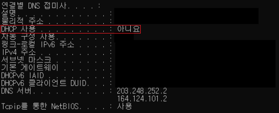
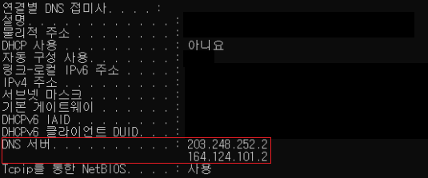

* 개인적인 공부 내용을 기록하는 용도로 작성한 글 이기에 잘못된 내용을 포함하고 있을 수 있습니다.
출처 : 해킹 입문자를 위한 TCP/IP 이론과 보안 2/e
#1 DHCP
#2 DNS
#1 DHCP
IP주소를 식별자로 사용하기 위해서는 원래 사용자가 IP주소, 서브넷 마스크, 기본 게이트 웨이 등을 직접 입력해 주어야 한다. 하지만 이런 입력을 수행하기 위해서는 사용자가 IP주소의 기본적인 체계에 대해 알아야 할 뿐 만 아니라 일일이 IP주소를 입력하는 것은 여간 쉬운 일이 아니다.
DHCP(Dynamic Host Configuration Protocol)서비스는 사용자가 사용할 IP 주소 범위를 서버에 미리 등록해 두면 사용자에게 IP주소 서브넷 마스크 기본 게이트웨이 IP 주소 등을 유동 IP 방식으로 할당해 주는 기능이다.
ipconfig/all 명령어를 커맨드 창에 입력하면 DHCP 서비스 사용 여부를 파악할 수 있다.
만약 사용 부분이 "예" 혹은 "yes"로 표시되면 해당 PC에서 IP주소를 유동 IP방식으로 할당받아 사용 한다는 뜻이다.

#2 DNS

사용자는 웹 브라우저에 접속하여 특정 사이트로 이동하고자 할 때 주소창(URL)에 www.google.com 과 같은 도메인 네임을 입력해 해당하는 사이트로 이동하곤 한다. DNS(Domain Name Service)는 사용자가 입력한 도메인 네임(URL)을 IP주소로 변환해 주는 기능을 수행한다.
즉, 도메인 네임과 IP주소의 대응 관게를 데이터베이스 형태로 저장해 사용하는 기능을 DNS 라고 부른다.
만약 IP주소를 사용해 직접 사이트로 접속하고 싶다면 주소창에 직접 IP를 입력하면 된다. 원하는 사이트의 IP주소를 알아내는 방법은 cmd창에 nslookup [사이트 주소]를 입력하면 해당 사이트의 IP 주소가 콘솔에 출력된다.